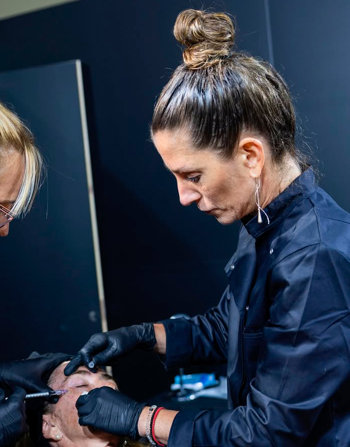
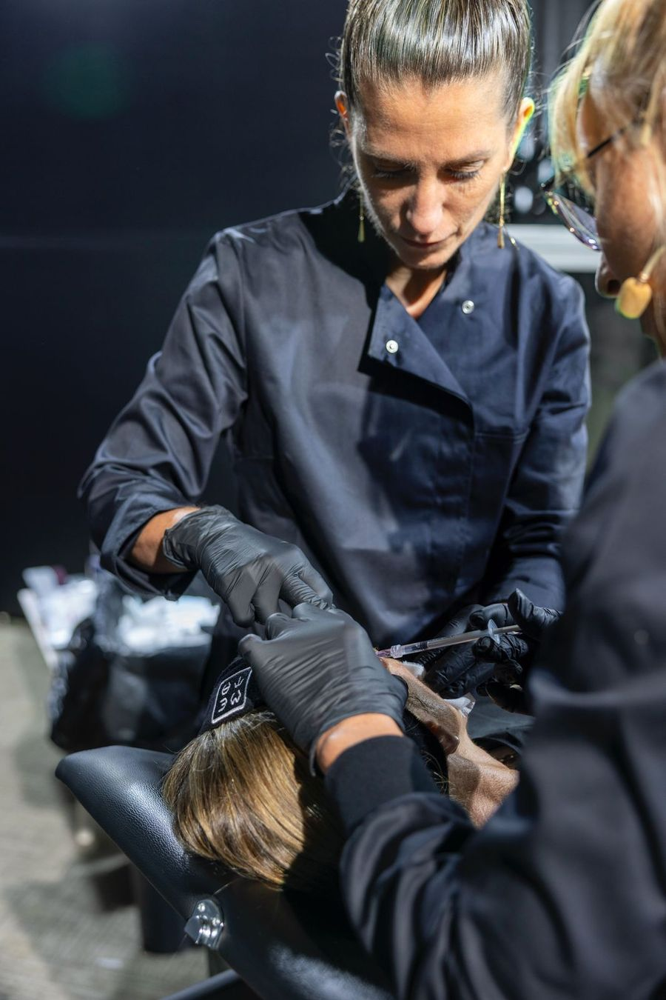
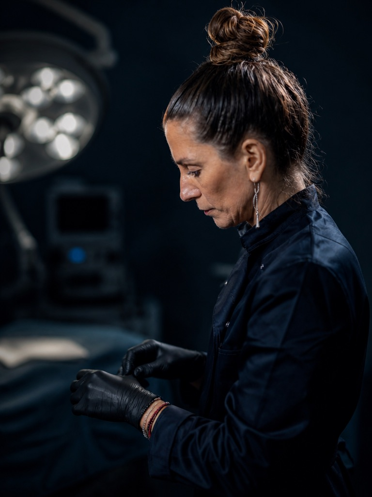

M.N. 23.903.785Cirujana · Flebóloga UCA · Medicina estética
Estética y flebología con mirada de cirujana.
Médica con Diploma de Honor de la Universidad Favaloro, cirujana general y flebóloga. Más de veinte años de práctica quirúrgica aplicados a tratamientos estéticos seguros y de resultado natural.
Atiende en Monteros, Tucumán y Arenales, CABA
- Formación
- Médica, Universidad FavaloroDiploma de Honor, 1998
- Especialidades
- Cirugía GeneralFlebología y Linfología, UCA
- Estética
- Posgrado trienal avanzadoAsociación Médica Argentina
- Experiencia
- 12 años como jefa de quirófanoHospital Regional de Concepción

01Sobre mí
Doce años al frente de un centro quirúrgico. Hoy, esa precisión está al servicio de la estética.
Me formé como cirujana general en el Policlínico Bancario y como especialista en flebología en la Universidad Católica Argentina. Entre 2011 y 2023 fui jefa del Centro Quirúrgico del Hospital Regional de Concepción.
En paralelo completé el posgrado trienal de Medicina Estética de la Asociación Médica Argentina y me capacité en anatomía y disección en ICLO Verona, Italia. Conocer el cuerpo desde adentro cambia la forma de tratarlo desde afuera.
Cada consulta empieza por escucharte y evaluarte. Recién después, y solo si corresponde, elegimos un tratamiento.
02Tratamientos
Qué tratamos
Tocá un tratamiento para ver en qué consiste. La indicación siempre surge de una evaluación médica.
Imágenes ilustrativas.

03Primera consulta
Cómo empezamos
-
1
Escribís por WhatsApp
Coordinamos día, horario y sede según tu disponibilidad. Siempre con cita previa.
-
2
Evaluación médica
Una consulta clínica completa, vascular o estética, para entender tu caso y tus expectativas.
-
3
Plan a tu medida
Te explico las opciones con claridad y definimos juntos el tratamiento y su seguimiento.
04Preguntas
Antes de tu consulta
¿Cómo es la primera consulta?
Realizamos una evaluación clínica completa, vascular o estética, para diseñar un plan de tratamiento personalizado y seguro.
¿Aceptan obras sociales?
Para flebología, consultá la cobertura de tu plan. Los tratamientos estéticos son particulares; se puede emitir factura para reintegro si tu plan lo permite.
¿Dónde atiende?
En su consultorio de Alberdi 320, Monteros, Tucumán, y en Banegas Estética Médica, Arenales, CABA. En ambas sedes se requiere cita previa.
¿Los tratamientos estéticos requieren reposo?
La mayoría de los tratamientos inyectables son ambulatorios y permiten retomar la vida normal al salir. En la consulta te explicamos los cuidados de cada procedimiento.